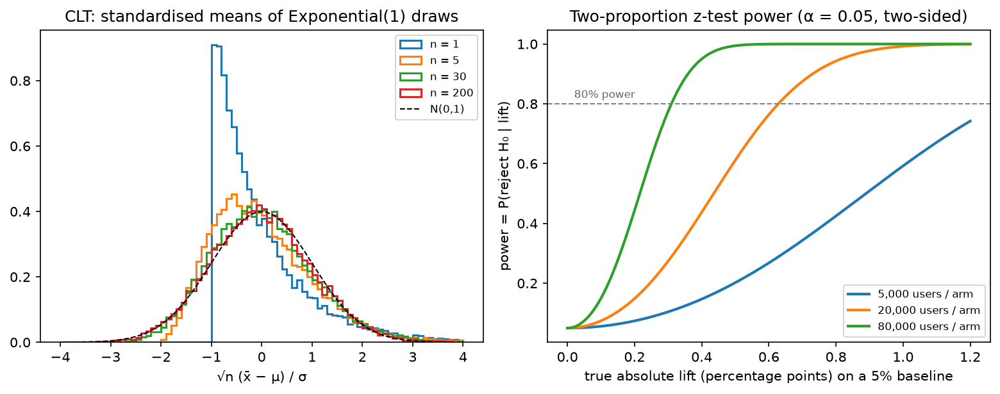

Statistics¶
Why this matters at staff level. Statistics is where the ML depth round meets the product round. You will be asked to derive why L2 regularisation is a Gaussian prior, to decompose a model's error into bias and variance, and, in almost every consumer-company loop, to design an A/B test: sample size, what can go wrong, how to get an answer faster. Strong signal is treating the model as an estimator with bias, variance and a sampling distribution, and treating an experiment as a measurement with power and error bars, not a p-value oracle.
TL;DR: the interview card¶
- MLE: \(\hat\theta = \argmax_\theta \sum_i \log p(x_i\mid\theta)\). Gaussian: \(\hat\mu = \bar x\), \(\hat\sigma^2 = \frac1N\sum(x_i - \bar x)^2\) (biased by \(\frac{N-1}{N}\)). Minimising cross-entropy is MLE (chapter 05).
- MAP: \(\argmax_\theta \log p(x\mid\theta) + \log p(\theta)\). Gaussian prior \(\Rightarrow\) \(+\lambda\norm{\theta}_2^2\) (ridge, \(\lambda = \sigma^2/\tau^2\)); Laplace prior \(\Rightarrow\) \(+\lambda\norm{\theta}_1\) (lasso).
- Bias–variance: \(\E[(\hat f(x) - y)^2] = (\E\hat f - f)^2 + \mathrm{Var}(\hat f) + \sigma^2\). Averaging \(M\) models divides the variance term by up to \(M\).
- Estimator quality: bias, variance, MSE \(=\) bias\(^2 +\) variance, consistency (\(\hat\theta \to \theta\) as \(N\to\infty\)), efficiency (Cramér–Rao). MLE is consistent, asymptotically normal with variance \(1/(N\,I(\theta))\).
- CLT: \(\sqrt N(\bar x - \mu)/\sigma \to \mathcal N(0, 1)\). 95% CI for a mean: \(\bar x \pm 1.96\,s/\sqrt N\). Error bars shrink as \(1/\sqrt N\).
- A/B test on conversion: \(z = (\hat p_B - \hat p_A)/\sqrt{\bar p(1-\bar p)(1/n_A + 1/n_B)}\); users per arm for absolute MDE \(\delta\) at \(\alpha = 0.05\), power \(0.8\): \(n \approx 2(z_{0.975} + z_{0.8})^2\,\bar p(1-\bar p)/\delta^2 \approx 15.7\,\bar p(1-\bar p)/\delta^2\).
- CUPED: \(\tilde y = y - \theta(x - \bar x)\) with \(x\) a pre-experiment covariate reduces variance by \((1 - \rho^2)\).
- Bootstrap: resample with replacement, recompute the statistic, take percentiles, the tool for ratio metrics, quantiles and ranking metrics.
- Calibration: ECE \(= \sum_b \frac{n_b}{N}|\mathrm{acc}_b - \mathrm{conf}_b|\); temperature scaling fixes overconfidence without changing accuracy.
- In production: Microsoft ExP (scale, CUPED, pitfalls), Netflix (experimentation platform, sequential testing), Airbnb (peeking, novelty effects, selection bias), calibration of modern nets (Guo et al.).
1. Intuition first¶
You flip a coin 10 times and see 7 heads. The MLE of \(p\) is \(0.7\), the value under which what you saw was most probable. But you would not bet your salary on 0.7: the standard error is \(\sqrt{0.7\times0.3/10} \approx 0.145\), so anything from 0.4 to 1.0 is plausible. If you also believe coins are usually fair, a \(\text{Beta}(10, 10)\) prior pulls the estimate to \(\frac{7+10}{10+20} = 0.57\). That is the entire MLE–MAP story: the likelihood says what the data supports, the prior says what you believed before, and the ratio of their strengths (\(N\) vs the pseudo-counts) decides who wins.
Now the A/B version. Control converts at 5.0%. You ship a change and, after 1,000 users per arm, see 5.6% in treatment. Is that real? The standard error of the difference is \(\sqrt{2\times0.053\times0.947/1000} \approx 0.010\), so a 0.006 lift is \(0.6\) standard errors: noise. To detect a true 0.6-point lift with 80% power you need about \(15.7\times0.053\times0.947/0.006^2 \approx 22{,}000\) users per arm. Every A/B-test question is a version of this arithmetic plus the ways it silently breaks (peeking, multiple metrics, non-independent users, novelty effects).

Left: standardised sample means of Exponential(1) draws for \(n = 1, 5, 30, 200\). The source law is maximally skewed, yet by \(n = 30\) the mean is close to Gaussian. That is why \(\bar x \pm 1.96\,s/\sqrt n\) works for almost any per-user metric. Right: the power of a two-proportion z-test on a 5% baseline as a function of the true lift, for three sample sizes. Power at zero lift is \(\alpha = 0.05\) (false positives).
2. The math¶
2.1 Maximum likelihood¶
Given i.i.d. data \(x_1,\dots,x_N \sim p(x\mid\theta^\star)\), the log-likelihood is \(\ell(\theta) = \sum_i\log p(x_i\mid\theta)\) and \(\hat\theta_{\text{MLE}} = \argmax_\theta\ell(\theta)\).
Gaussian. \(\ell(\mu, \sigma^2) = -\frac{N}{2}\log(2\pi\sigma^2) - \frac{1}{2\sigma^2}\sum_i(x_i - \mu)^2\). \(\partial_\mu\ell = \frac{1}{\sigma^2}\sum(x_i - \mu) = 0 \Rightarrow \hat\mu = \bar x\). \(\partial_{\sigma^2}\ell = -\frac{N}{2\sigma^2} + \frac{1}{2\sigma^4}\sum(x_i - \mu)^2 = 0 \Rightarrow \hat\sigma^2 = \frac1N\sum(x_i - \bar x)^2\). \(\E[\hat\sigma^2] = \frac{N-1}{N}\sigma^2\): biased, because \(\bar x\) was fitted to the same data and sits closer to the points than \(\mu\) does; dividing by \(N-1\) fixes it. MLE minimises MSE when the noise model is Gaussian, the MSE loss is a Gaussian likelihood assumption.
Bernoulli. \(\ell(p) = k\log p + (N - k)\log(1 - p) \Rightarrow \hat p = k/N\). Binary cross-entropy is this with \(p\) replaced by a model output \(\sigma(z)\).
Properties (under regularity conditions): the MLE is consistent (\(\hat\theta\to\theta^\star\) in probability), asymptotically normal with \(\sqrt N(\hat\theta - \theta^\star)\to\mathcal N(0, I(\theta^\star)^{-1})\) where \(I(\theta) = -\E[\partial^2_\theta\log p(x\mid\theta)]\) is the Fisher information, efficient (attains the Cramér–Rao bound \(\mathrm{Var}(\hat\theta)\ge 1/(N I(\theta))\) asymptotically), and invariant to reparameterisation. Chapter 05 proves that minimising cross-entropy against the empirical distribution is exactly MLE, so all of this transfers to every classifier and language model you train.
2.2 MAP, and why L2 is a Gaussian prior and L1 a Laplace prior¶
\(\hat\theta_{\text{MAP}} = \argmax_\theta\big[\log p(x\mid\theta) + \log p(\theta)\big]\), the evidence \(p(x)\) drops out because it does not depend on \(\theta\).
Gaussian prior \(\theta_j \sim \mathcal N(0, \tau^2)\) i.i.d.: \(\log p(\theta) = -\frac{1}{2\tau^2}\norm{\theta}_2^2 + \text{const}\). For linear regression with noise variance \(\sigma^2\), the negative log-posterior is
so ridge regression is MAP with a Gaussian prior, and its closed form \(w = (X^\top X + \lambda I)^{-1}X^\top y\) follows by setting the gradient to zero. What it means: \(\lambda\) is a ratio of noise to prior variance, noisy data or a tight prior pulls harder towards zero. Weight decay in a neural net is the same statement.
Laplace prior \(p(\theta_j) = \frac{1}{2b}e^{-|\theta_j|/b}\): \(\log p(\theta) = -\frac1b\norm{\theta}_1 + \text{const}\), giving the lasso penalty \(\lambda\norm{w}_1\) with \(\lambda = 2\sigma^2/b\). The Laplace density has a cusp at zero, so the posterior mode can sit exactly at \(\theta_j = 0\) (sparsity) whereas the Gaussian's smooth peak only shrinks.
Discrete example. The MAP of a Bernoulli rate with a \(\text{Beta}(a, b)\) prior is \(\frac{k + a - 1}{N + a + b - 2}\); with \(a = b = 2\) this is Laplace's "add one" smoothing.
2.3 Bias, variance, and the decomposition¶
An estimator \(\hat\theta\) of \(\theta\) has bias \(\E[\hat\theta] - \theta\) and variance \(\mathrm{Var}(\hat\theta)\), and \(\E[(\hat\theta - \theta)^2] = \text{bias}^2 + \text{variance}\) (expand \((\hat\theta - \E\hat\theta + \E\hat\theta - \theta)^2\); the cross term vanishes). Now the supervised-learning version. Data \(y = f(x) + \epsilon\), \(\E\epsilon = 0\), \(\mathrm{Var}\,\epsilon = \sigma^2\); \(\hat f\) is trained on a random training set \(\mathcal D\). At a fixed test \(x\),
Write \(\hat f - y = (\hat f - \E\hat f) + (\E\hat f - f) - \epsilon\) and square. The cross terms vanish: \(\E[\hat f - \E\hat f] = 0\) by definition, \(\E[\epsilon] = 0\), and \(\epsilon\) (test noise) is independent of \(\hat f\) (trained on other data). Hence
What it means: bias is the error of the average model, capacity too low, wrong inductive bias; variance is how much the model changes with a different training sample, too much capacity per datum. Averaging \(M\) models trained on independent samples leaves bias unchanged and divides variance by \(M\) (bagging, ensembles); it is the law of total variance of chapter 03 with \(Y = \mathcal D\). Over-parameterised networks complicate the classical U-shape (double descent) but the decomposition itself is an identity and always holds.
2.4 Sampling distributions, the CLT and confidence intervals¶
If \(x_i\) are i.i.d. with mean \(\mu\) and finite variance \(\sigma^2\), then \(\sqrt N(\bar x - \mu)/\sigma \xrightarrow{d} \mathcal N(0, 1)\). Practically: for \(N \gtrsim 30\) and non-pathological tails, \(\bar x \approx \mathcal N(\mu, \sigma^2/N)\), so a \((1-\alpha)\) confidence interval is
A 95% CI is a procedure that covers the true value in 95% of repeated experiments; it is not "a 95% probability that \(\mu\) is in this interval" (that is the Bayesian credible interval, §2.7). Heavy-tailed metrics (revenue, session length) converge slowly; winsorise or use the bootstrap.
2.5 Hypothesis testing, framed as an A/B test¶
Null \(H_0\): \(p_A = p_B\). Test statistic under \(H_0\) for two proportions with pooled \(\bar p\):
Reject at \(\alpha = 0.05\) if \(|z| > 1.96\). Type I error (false positive) rate is \(\alpha\) by construction; power \(1 - \beta\) is the probability of rejecting when the true lift is \(\delta\). For equal arms of size \(n\) and standard error \(\text{SE} \approx \sqrt{2\bar p(1-\bar p)/n}\), the rejection region \(|z| > z_{1-\alpha/2}\) is hit with probability \(\approx 1 - \Phi(z_{1-\alpha/2} - \delta/\text{SE})\); setting this to \(1 - \beta\) gives \(\delta/\text{SE} = z_{1-\alpha/2} + z_{1-\beta}\) and hence
What it means: sample size scales as \(1/\delta^2\): halving the minimum detectable effect quadruples the traffic. For a continuous per-user metric replace \(\bar p(1-\bar p)\) by \(\sigma^2\) and use Welch's \(t\) (unequal variances). The implementation includes both.
Ways it breaks, each of which a strong candidate names unprompted:
- Peeking. Checking the p-value daily and stopping when it crosses 0.05 inflates the false-positive rate several-fold. Fix: fix \(n\) in advance, or use sequential tests (always-valid p-values, group-sequential boundaries).
- Multiple comparisons. 20 metrics at \(\alpha = 0.05\) give a 64% chance of at least one false positive. Fix: one primary metric, Bonferroni/Benjamini–Hochberg on the rest.
- Unit of randomisation ≠ unit of analysis. Randomise by user, analyse by session/pageview → correlated samples, SE too small. Fix: delta method or clustered bootstrap for ratio metrics.
- Interference. Marketplace and social effects: treatment users change what control users see. Fix: cluster/geo/switchback designs.
- Novelty and primacy. Effects that decay after a week. Fix: run at least one full weekly cycle; look at cohort curves.
- Sample ratio mismatch. 50/50 split that comes out 52/48 with \(p < 0.001\) means the logging or assignment is broken; do not read the metrics.
2.6 Variance reduction: CUPED¶
Let \(y\) be the metric and \(x\) a covariate measured before the experiment (the same metric in the prior weeks), so treatment cannot affect \(x\). Define \(\tilde y = y - \theta(x - \bar x)\). Then \(\E\tilde y = \E y\) for any \(\theta\), and
minimised at \(\theta^\star = \mathrm{Cov}(x, y)/\mathrm{Var}(x)\) (the regression slope), giving \(\mathrm{Var}(\tilde y) = \mathrm{Var}(y)(1 - \rho^2)\). What it means: a pre-period metric with correlation \(0.7\) cuts variance in half, equivalent to doubling traffic for free. This is the single most valuable statistical trick in online experimentation.
2.7 Bootstrap and Bayesian inference¶
Bootstrap. Resample \(N\) points with replacement \(B\) times, compute the statistic each time, and use the empirical distribution (percentiles for a CI, spread for a standard error). It needs no formula for the sampling distribution, so it is the tool for quantiles (p99 latency), ratio metrics (CTR = clicks/impressions at the user level), and ranking metrics (NDCG, mAP over queries). Resample the independent units (users, queries, images), never the rows of a dependent table. Cost: \(B\) recomputations, \(B \approx 1000\)–\(10^4\).
Bayesian inference. Posterior \(p(\theta\mid x)\propto p(x\mid\theta)p(\theta)\); report the posterior mean and a credible interval (which is a probability statement about \(\theta\)). With conjugate priors the update is closed-form (Beta–Binomial: add the counts). Bayesian A/B testing reports \(P(p_B > p_A\mid\text{data})\) and the expected loss of shipping; it is immune to peeking in the sense that the posterior is always valid, though decision rules based on it still have frequentist error rates you should know.
2.8 Calibration and uncertainty basics¶
A classifier is calibrated if among predictions with confidence \(c\), a fraction \(c\) are correct. Bin predictions by confidence; ECE \(= \sum_b\frac{n_b}{N}\,|\mathrm{acc}_b - \mathrm{conf}_b|\); a reliability diagram plots \(\mathrm{acc}_b\) against \(\mathrm{conf}_b\). Modern nets trained to zero training loss are overconfident; temperature scaling (divide logits by a scalar \(T\) fitted on a validation set) fixes ECE without changing the argmax. Calibration matters whenever a probability is used downstream: thresholds in fraud, expected-value ranking in ads, fusion of detector scores across sensors. Uncertainty splits into aleatoric (noise in the data; predict a variance) and epistemic (lack of data; ensembles, Bayesian approximations). The deep dive, deep ensembles, MC-dropout, conformal prediction, selective prediction, is in Part XIII.
3. Implementation¶
All in src/mlbook/math/stats.py. MLE, MAP and ridge-as-MAP:
def mle_gaussian(x: np.ndarray) -> tuple[float, float]:
mu = float(x.mean())
var = float(np.mean((x - mu) ** 2)) # divides by N, not N-1
return mu, var
def map_gaussian_mean(x: np.ndarray, sigma: float, mu0: float, tau: float) -> float:
n = x.shape[0]
precision_data = n / sigma**2
precision_prior = 1.0 / tau**2
return float((x.sum() / sigma**2 + mu0 * precision_prior) / (precision_data + precision_prior))
def ridge_closed_form(X: np.ndarray, y: np.ndarray, lam: float) -> np.ndarray:
d = X.shape[1]
return np.linalg.solve(X.T @ X + lam * np.eye(d), X.T @ y) # (d,)
map_gaussian_mean is a precision-weighted average: \(N/\sigma^2\) votes for the data mean, \(1/\tau^2\) for the
prior mean. As \(\tau\to\infty\) it becomes the MLE; as \(N\to\infty\) the prior is swamped.
The bias–variance decomposition by simulation, and the A/B test:
def bias_variance_decomposition(predictions: np.ndarray, y_true: np.ndarray, noise_var: float = 0.0) -> dict:
mean_pred = predictions.mean(axis=0) # (N,) E[f_hat(x)]
bias_sq = np.mean((mean_pred - y_true) ** 2) # scalar
variance = np.mean(predictions.var(axis=0)) # scalar: mean over x of Var[f_hat(x)]
total = bias_sq + variance + noise_var
return {"bias_sq": float(bias_sq), "variance": float(variance), "noise": noise_var, "total": float(total)}
def two_proportion_z_test(k_a: int, n_a: int, k_b: int, n_b: int) -> dict:
p_a, p_b = k_a / n_a, k_b / n_b
p_pool = (k_a + k_b) / (n_a + n_b)
se = math.sqrt(p_pool * (1 - p_pool) * (1 / n_a + 1 / n_b))
z = (p_b - p_a) / se
p_value = 2.0 * (1.0 - float(normal_cdf(abs(z))))
return {"lift": p_b - p_a, "z": z, "p_value": p_value, "se": se}
predictions is an \((M, N)\) matrix of \(M\) independently trained models evaluated on the same \(N\) test points;
the decomposition is computed per point and averaged. The test asserts that the raw MSE across models and points
equals bias\(^2\) + variance exactly (no noise term, since y_true is noiseless).
Sample size, bootstrap, ECE:
def sample_size_two_proportions(p0: float, mde_abs: float, alpha: float = 0.05, power: float = 0.8) -> int:
p1 = p0 + mde_abs
p_bar = 0.5 * (p0 + p1)
z_alpha = z_critical(1 - alpha) # two-sided
z_beta = z_critical(1 - 2 * (1 - power)) # one-sided quantile at `power`
num = (z_alpha * math.sqrt(2 * p_bar * (1 - p_bar)) + z_beta * math.sqrt(p0 * (1 - p0) + p1 * (1 - p1))) ** 2
return int(math.ceil(num / mde_abs**2))
def bootstrap_ci(x: np.ndarray, stat, n_boot: int = 2000, confidence: float = 0.95, seed: int = 0) -> tuple[float, float]:
rng = np.random.default_rng(seed)
n = x.shape[0]
idx = rng.integers(0, n, size=(n_boot, n)) # (n_boot, N) resample indices
stats = np.array([stat(x[row]) for row in idx]) # (n_boot,)
alpha = 1 - confidence
return float(np.quantile(stats, alpha / 2)), float(np.quantile(stats, 1 - alpha / 2))
def expected_calibration_error(probs: np.ndarray, labels: np.ndarray, n_bins: int = 10) -> float:
edges = np.linspace(0.0, 1.0, n_bins + 1) # (n_bins+1,)
ece = 0.0
n = probs.shape[0]
for lo, hi in zip(edges[:-1], edges[1:]):
mask = (probs > lo) & (probs <= hi) # (N,) bool
if mask.sum() == 0:
continue
acc = labels[mask].mean()
conf = probs[mask].mean()
ece += mask.sum() / n * abs(acc - conf)
return float(ece)
The sample-size formula uses the exact (unpooled-under-alternative) form; the TL;DR's \(15.7\,\bar p(1-\bar p)/\delta^2\)
is its pooled approximation. z_critical is a bisection on the normal CDF, so the module has no SciPy dependency.
The bootstrap draws all \(B\times N\) indices at once, vectorised resampling, with the statistic applied per row.
How you'd test it. z_critical(0.95) \(= 1.95996\); two_proportion_z_test against the formula and
scipy.stats.norm.sf; welch_t_statistic against scipy.stats.ttest_ind(equal_var=False) on large samples;
the sample-size function against the textbook \(\approx 31\)k per arm for \(5\% \to 5.5\%\); the bootstrap CI
brackets the truth and matches the CLT interval's width for a mean; the CLT experiment's standardised means
have skew \(\to 0\); ECE on a hand-computed example.
Full implementation: src/mlbook/math/stats.py
"""Statistics: MLE/MAP, bias-variance, intervals, A/B tests, bootstrap, calibration.
Pure NumPy; the normal CDF comes from ``mlbook.math.probability``.
"""
from __future__ import annotations
import math
import numpy as np
from mlbook.math.probability import normal_cdf
# ---------------------------------------------------------------------------
# Point estimation: MLE and MAP
# ---------------------------------------------------------------------------
def mle_gaussian(x: np.ndarray) -> tuple[float, float]:
"""MLE of a univariate Gaussian: ``mu = mean(x)``, ``sigma^2 = mean((x-mu)^2)`` (biased, 1/N).
Args:
x: (N,).
"""
mu = float(x.mean())
var = float(np.mean((x - mu) ** 2)) # divides by N, not N-1
return mu, var
def map_gaussian_mean(x: np.ndarray, sigma: float, mu0: float, tau: float) -> float:
"""MAP of the mean with likelihood ``N(x; mu, sigma^2)`` and prior ``N(mu; mu0, tau^2)``.
``mu_MAP = (sum x / sigma^2 + mu0 / tau^2) / (N / sigma^2 + 1 / tau^2)``:
a precision-weighted average of the data mean and the prior mean.
Args:
x: (N,).
"""
n = x.shape[0]
precision_data = n / sigma**2
precision_prior = 1.0 / tau**2
return float((x.sum() / sigma**2 + mu0 * precision_prior) / (precision_data + precision_prior))
def ridge_closed_form(X: np.ndarray, y: np.ndarray, lam: float) -> np.ndarray:
"""Ridge = MAP with Gaussian prior: ``w = (X^T X + lam I)^{-1} X^T y``.
Args:
X: (N, d). y: (N,). lam: L2 strength = sigma^2 / tau^2 in the Bayesian reading.
Returns:
(d,).
"""
d = X.shape[1]
return np.linalg.solve(X.T @ X + lam * np.eye(d), X.T @ y) # (d,)
# ---------------------------------------------------------------------------
# Bias-variance decomposition (by simulation)
# ---------------------------------------------------------------------------
def bias_variance_decomposition(predictions: np.ndarray, y_true: np.ndarray, noise_var: float = 0.0) -> dict:
"""Decompose expected squared error over ``M`` re-trained models.
``E[(f_hat - y)^2] = (E f_hat - f)^2 + Var[f_hat] + sigma^2``.
Args:
predictions: (M, N) predictions of M independently trained models on N test points.
y_true: (N,) noiseless targets ``f(x)``.
Returns:
dict with mean ``bias_sq``, ``variance``, ``noise``, ``total`` over the N points.
"""
mean_pred = predictions.mean(axis=0) # (N,) E[f_hat(x)]
bias_sq = np.mean((mean_pred - y_true) ** 2) # scalar
variance = np.mean(predictions.var(axis=0)) # scalar: mean over x of Var[f_hat(x)]
total = bias_sq + variance + noise_var
return {"bias_sq": float(bias_sq), "variance": float(variance), "noise": noise_var, "total": float(total)}
# ---------------------------------------------------------------------------
# Intervals, tests, bootstrap
# ---------------------------------------------------------------------------
def z_critical(confidence: float) -> float:
"""Two-sided standard-normal critical value, e.g. 1.96 for 0.95 (bisection on Phi)."""
target = 1.0 - (1.0 - confidence) / 2.0
lo, hi = 0.0, 10.0
for _ in range(100):
mid = 0.5 * (lo + hi)
if normal_cdf(mid) < target:
lo = mid
else:
hi = mid
return 0.5 * (lo + hi)
def confidence_interval_mean(x: np.ndarray, confidence: float = 0.95) -> tuple[float, float]:
"""Normal-approximation CI for a mean: ``mean +- z * s / sqrt(N)`` (CLT).
Args:
x: (N,), N large enough for the CLT (rule of thumb: > 30, non-heavy-tailed).
"""
n = x.shape[0]
se = x.std(ddof=1) / math.sqrt(n)
z = z_critical(confidence)
return float(x.mean() - z * se), float(x.mean() + z * se)
def two_proportion_z_test(k_a: int, n_a: int, k_b: int, n_b: int) -> dict:
"""A/B test on conversion rates: pooled two-proportion z-test.
``z = (p_b - p_a) / sqrt(p (1-p) (1/n_a + 1/n_b))``, ``p`` pooled.
Two-sided p-value ``2 (1 - Phi(|z|))``.
Args:
k_a, n_a: conversions and users in control; k_b, n_b: in treatment.
Returns:
dict with lift ``p_b - p_a``, ``z``, ``p_value``, ``se``.
"""
p_a, p_b = k_a / n_a, k_b / n_b
p_pool = (k_a + k_b) / (n_a + n_b)
se = math.sqrt(p_pool * (1 - p_pool) * (1 / n_a + 1 / n_b))
z = (p_b - p_a) / se
p_value = 2.0 * (1.0 - float(normal_cdf(abs(z))))
return {"lift": p_b - p_a, "z": z, "p_value": p_value, "se": se}
def welch_t_statistic(x_a: np.ndarray, x_b: np.ndarray) -> dict:
"""Welch's t for unequal variances: ``t = (mean_b - mean_a) / sqrt(s_a^2/n_a + s_b^2/n_b)``.
The p-value uses the normal approximation to the t-distribution, which is
accurate for the sample sizes seen in online A/B tests (thousands+).
Args:
x_a: (n_a,) control metric per user. x_b: (n_b,) treatment.
"""
n_a, n_b = x_a.shape[0], x_b.shape[0]
var_a, var_b = x_a.var(ddof=1), x_b.var(ddof=1)
se = math.sqrt(var_a / n_a + var_b / n_b)
t = (x_b.mean() - x_a.mean()) / se
dof = (var_a / n_a + var_b / n_b) ** 2 / ((var_a / n_a) ** 2 / (n_a - 1) + (var_b / n_b) ** 2 / (n_b - 1))
p_value = 2.0 * (1.0 - float(normal_cdf(abs(t))))
return {"t": float(t), "dof": float(dof), "p_value": p_value, "se": se}
def sample_size_two_proportions(p0: float, mde_abs: float, alpha: float = 0.05, power: float = 0.8) -> int:
"""Users *per arm* to detect an absolute lift ``mde_abs`` on baseline ``p0``.
``n = (z_{1-alpha/2} sqrt(2 p (1-p)) + z_{power} sqrt(p0(1-p0) + p1(1-p1)))^2 / mde^2``
with ``p1 = p0 + mde`` and ``p`` the average of ``p0, p1``.
"""
p1 = p0 + mde_abs
p_bar = 0.5 * (p0 + p1)
z_alpha = z_critical(1 - alpha) # two-sided
z_beta = z_critical(1 - 2 * (1 - power)) # one-sided quantile at `power`
num = (z_alpha * math.sqrt(2 * p_bar * (1 - p_bar)) + z_beta * math.sqrt(p0 * (1 - p0) + p1 * (1 - p1))) ** 2
return int(math.ceil(num / mde_abs**2))
def bootstrap_ci(x: np.ndarray, stat, n_boot: int = 2000, confidence: float = 0.95, seed: int = 0) -> tuple[float, float]:
"""Percentile bootstrap CI for any statistic ``stat: (N,) -> float``.
Resample ``N`` points with replacement ``n_boot`` times, take the empirical
``(alpha/2, 1-alpha/2)`` quantiles of the statistic.
"""
rng = np.random.default_rng(seed)
n = x.shape[0]
idx = rng.integers(0, n, size=(n_boot, n)) # (n_boot, N) resample indices
stats = np.array([stat(x[row]) for row in idx]) # (n_boot,)
alpha = 1 - confidence
return float(np.quantile(stats, alpha / 2)), float(np.quantile(stats, 1 - alpha / 2))
# ---------------------------------------------------------------------------
# Bayesian updating and calibration
# ---------------------------------------------------------------------------
def beta_binomial_posterior(a: float, b: float, successes: int, failures: int) -> tuple[float, float]:
"""Conjugate update: ``Beta(a, b)`` prior + binomial data -> ``Beta(a + s, b + f)``."""
return a + successes, b + failures
def expected_calibration_error(probs: np.ndarray, labels: np.ndarray, n_bins: int = 10) -> float:
"""ECE for binary predictions: ``sum_b (n_b / N) |acc_b - conf_b|``.
Args:
probs: (N,) predicted P(y=1). labels: (N,) in {0, 1}.
"""
edges = np.linspace(0.0, 1.0, n_bins + 1) # (n_bins+1,)
ece = 0.0
n = probs.shape[0]
for lo, hi in zip(edges[:-1], edges[1:]):
mask = (probs > lo) & (probs <= hi) # (N,) bool
if mask.sum() == 0:
continue
acc = labels[mask].mean()
conf = probs[mask].mean()
ece += mask.sum() / n * abs(acc - conf)
return float(ece)
def clt_sample_means(sampler, n_per_sample: int, n_samples: int) -> np.ndarray:
"""Draw ``n_samples`` means of ``n_per_sample`` draws each: the CLT experiment.
Args:
sampler: callable ``sampler(size) -> (size,)`` from any finite-variance law.
Returns:
(n_samples,) sample means; approximately Gaussian for large ``n_per_sample``.
"""
draws = sampler((n_samples, n_per_sample)) # (n_samples, n_per_sample)
return draws.mean(axis=1) # (n_samples,)
Retype by hand¶
| Reproduce from memory | File | Target time |
|---|---|---|
mle_gaussian, ridge_closed_form |
src/mlbook/math/stats.py |
4 min together |
bias_variance_decomposition |
src/mlbook/math/stats.py |
5 min |
two_proportion_z_test |
src/mlbook/math/stats.py |
5 min |
sample_size_two_proportions |
src/mlbook/math/stats.py |
6 min |
bootstrap_ci |
src/mlbook/math/stats.py |
5 min |
expected_calibration_error |
src/mlbook/math/stats.py |
6 min |
Fine to just read: map_gaussian_mean, z_critical, confidence_interval_mean, welch_t_statistic,
beta_binomial_posterior, clt_sample_means.
Check with:
pytest tests/test_math_stats.py -k "mle_gaussian or ridge or bias_variance or two_proportion or sample_size or bootstrap or calibration" -q
4. Systems view: cost, failure modes, trade-offs¶
Cost. A z-test is free. The bootstrap is \(B\times\) the cost of the statistic, for NDCG over \(10^5\) queries with \(B = 2000\) that is a few minutes, fine; for a metric that requires re-running a model it is not, so cache per-unit contributions and resample those. CUPED requires joining pre-period data per user: a feature-store problem, not a statistics problem. Sequential tests cost power at a fixed \(n\) in exchange for early stopping.
Failure modes beyond §2.5: using per-token or per-frame samples as independent when the unit is the document or the video (SEs off by \(\sqrt{\text{cluster size}}\)); reporting model comparisons without seed variance (three seeds is the minimum for a claim); calibration measured on the training distribution and then deployed under shift; treating a Bayesian posterior with a flat prior on a tiny sample as informative.
When to use what.
| Question | Tool | Rule |
|---|---|---|
| Mean of a per-user metric, \(N > 1000\) | z / Welch \(t\) interval | CLT; winsorise heavy tails |
| Conversion rate difference | Two-proportion z-test | Pooled SE under \(H_0\); power calc before launch |
| Ratio, quantile or ranking metric | Bootstrap over independent units | Delta method if you need a formula |
| Small \(N\), strong prior knowledge | Bayesian (conjugate) | Report the posterior, state the prior |
| Need to ship faster with same traffic | CUPED / regression adjustment | Needs a pre-period covariate |
| Need to stop early safely | Sequential / always-valid tests | Pre-register the boundary |
| Compare two models on one test set | Paired bootstrap over examples | Same examples → paired, not independent |
| Probabilities are consumed downstream | Temperature scaling + ECE | Fit on validation, monitor after deployment |
5. In production¶
Microsoft: ExP platform: scale, CUPED and the pitfalls list
R. Kohavi, A. Deng, B. Frasca, T. Walker, Y. Xu & N. Pohlmann, "Online Controlled Experiments at Large Scale", KDD 2013; A. Deng, Y. Xu, R. Kohavi & T. Walker, "Improving the Sensitivity of Online Controlled Experiments by Utilizing Pre-Experiment Data", WSDM 2013 (the CUPED paper); R. Kohavi, D. Tang & Y. Xu, Trustworthy Online Controlled Experiments, Cambridge University Press, 2020. Bing ran thousands of concurrent experiments; CUPED with a pre-period version of the same metric was reported to cut variance by roughly half on key metrics, equivalent to doubling traffic. The KDD paper's rules of thumb (sample-ratio-mismatch checks, the surprising frequency of "flat" results, Twyman's law for too-good results) are the checklist interviewers expect you to know. Rejected alternative: more traffic or longer runs, which cost real product velocity.
Netflix: experimentation platform and sequential testing
Netflix Technology Blog, "It's All A/Bout Testing: The Netflix Experimentation Platform" (2016), and the 2021 series by M. Tingley et al. including "Decision Making at Netflix", "Interpreting A/B test results: false positives and statistical significance" and "…false negatives and power". Netflix runs member-level experiments on streaming metrics with heavy tails and uses variance reduction and sequential methods so that analysts can look at results continuously without inflating false positives. The series also explains why a 5% false-positive rate is a policy choice tied to the cost of shipping a neutral change. Rejected alternative: naive daily peeking on fixed-horizon tests, which the posts show inflates false positives several-fold.
Airbnb: peeking, novelty effects and selection bias
J. Overgoor, "Experiments at Airbnb", Airbnb Engineering (Medium), 2014; M. Shen et al., "Selection Bias in Online Experimentation", Airbnb Engineering, 2018. The 2014 post documents a test that looked significant after a few days and washed out by the end, the peeking problem, along with Airbnb's response of computing a dynamic p-value threshold plus a minimum run length covering a full weekly cycle. The 2018 post covers why the winning variants' measured lifts are optimistically biased (the winner's curse) and how to correct it. Both are canonical reading for the "what can go wrong with this test" follow-up.
Calibration of modern neural networks (Cornell)
C. Guo, G. Pleiss, Y. Sun & K. Weinberger, "On Calibration of Modern Neural Networks", ICML 2017 (arXiv:1706.04599). Showed that ResNet-era classifiers are markedly more overconfident than earlier nets (depth, width, batch norm and lack of weight decay all worsen ECE), and that a single temperature fitted on validation NLL brings ECE down to \(\sim 1\%\) on ImageNet without touching accuracy. Why temperature over Platt/isotonic: one parameter, monotone, cannot reorder predictions, robust to small validation sets. Temperature scaling is now a default post-processing step wherever scores feed thresholds or fusion.
6. Interview questions and strong answers¶
Design the A/B test for a ranking change expected to raise CTR from 5.0% to 5.3%.
Primary metric CTR per user (unit of randomisation = user); \(\delta = 0.003\), \(\bar p\approx 0.0515\); \(n \approx 15.7\times0.0515\times0.9485/0.003^2 \approx 85\)k users per arm at 80% power. Run at least one full week; pre-register the primary metric and a guardrail set; check sample-ratio mismatch before reading anything; apply CUPED with the previous two weeks' CTR to cut the needed traffic roughly in half; analyse with a delta-method or bootstrap SE because CTR is a ratio. Staff follow-up: the PM wants to peek daily. Then use a sequential test with a pre-registered boundary, and explain that the price is somewhat lower power at the planned horizon.
Why is the MLE of the variance biased, and where does that bite in deep learning?
\(\hat\sigma^2\) uses \(\bar x\) instead of \(\mu\); since \(\bar x\) minimises \(\sum(x_i - c)^2\) over \(c\), the sum is systematically smaller than with \(\mu\), by a factor \(\frac{N-1}{N}\). Training a net is unaffected (any consistent estimator is fine at \(N \gg 1\)). Batch norm with small batches is affected: the biased variance of a batch of 2–8 underestimates the true variance and the running statistics are wrong, one reason group/layer norm replaced it in small-batch regimes. Staff follow-up: PyTorch's BatchNorm uses which estimator for running variance? The unbiased one for the running estimate, the biased one for normalising the current batch.
Derive that weight decay is a Gaussian prior. What prior corresponds to dropout?
Negative log-posterior \(= \text{NLL} + \frac{1}{2\tau^2}\norm{\theta}^2\), so \(\lambda = \sigma^2/\tau^2\) (for a Gaussian likelihood) and the penalty is exactly the negative log of an isotropic Gaussian prior. Dropout has no exact prior interpretation; the closest is Gal & Ghahramani's variational reading (a Bernoulli-mixture approximate posterior), which is an argument about the approximating family, not a prior. Staff follow-up: does the correspondence survive with Adam? Not for coupled L2: Adam rescales the penalty's gradient per coordinate, so the effective prior is no longer isotropic. That is AdamW's motivation (chapter 06).
Your model's validation loss is much lower than test loss on a new city. Bias or variance?
Neither, in the classical sense. This is distribution shift, which the decomposition assumes away (same \(p(x)\) at train and test). Diagnose: does a model trained on the new city's small labelled set do better (shift) or does more data from the old city help (variance)? Under shift the fix is data from the target, domain adaptation, or features invariant to the city. Staff follow-up: how would you estimate the shift's size without labels? Train a domain classifier old-vs-new; its accuracy above 50% bounds the discrepancy.
You compare two detectors on a 5k-image test set: mAP 41.2 vs 41.9. Is B better?
Paired bootstrap over images (both models on the same resamples), 2000 resamples, look at the distribution of the mAP difference; report the CI. 0.7 mAP on 5k images is often within noise for rare classes. Also report per-class deltas and run three seeds per model; seed variance of \(\pm 0.3\) mAP is typical. Staff follow-up: how do you decide the test set is big enough before you start? From the bootstrap SE of the metric on the current set: it scales as \(1/\sqrt{N}\), so extrapolate to the \(N\) that gives the resolution you need.
A fraud model is 98% accurate. The fraud rate is 1%. What do you ask?
Accuracy is meaningless at that base rate (predicting "never fraud" gets 99%). Ask for precision/recall at the operating threshold, the PR curve, calibration of the scores (the threshold is a cost decision that needs calibrated probabilities), and the CI on recall given the tiny number of positives (\(\approx\) 50 fraud cases in 5k gives a recall SE of \(\sim 7\) points). Staff follow-up: the training set was rebalanced to 50/50; what happened to calibration? Scores are shifted by \(\log\) of the prior ratio; correct with the prior-shift formula or re-fit a temperature/bias on unbalanced validation data.
7. Exercises¶
★ 1. Show that \(\hat\sigma^2_{\text{MLE}}\) has expectation \(\frac{N-1}{N}\sigma^2\).
Solution
\(\sum(x_i - \bar x)^2 = \sum(x_i - \mu)^2 - N(\bar x - \mu)^2\). Expectations: \(N\sigma^2 - N\cdot\sigma^2/N = (N-1)\sigma^2\). Divide by \(N\).
★ 2. Derive \(\theta^\star\) for CUPED and the resulting variance.
Solution
\(\mathrm{Var}(y - \theta x) = \mathrm{Var}\,y - 2\theta\mathrm{Cov}(x,y) + \theta^2\mathrm{Var}\,x\); derivative in \(\theta\) zero at \(\theta^\star = \mathrm{Cov}(x,y)/\mathrm{Var}\,x\); substituting gives \(\mathrm{Var}\,y - \mathrm{Cov}^2/\mathrm{Var}\,x = \mathrm{Var}\,y\,(1 - \rho^2)\).
★★ 3. With 20 secondary metrics tested at \(\alpha = 0.05\), what is the probability of at least one false positive if they are independent? What does Bonferroni do to the per-metric threshold, and why is it conservative when metrics are correlated?
Solution
\(1 - 0.95^{20} \approx 0.64\). Bonferroni tests each at \(0.05/20 = 0.0025\), guaranteeing family-wise error \(\le 0.05\) by the union bound. When metrics are positively correlated (they usually are: clicks, sessions, time), the union bound is loose and true family-wise error is well below \(0.05\), so power is sacrificed; Benjamini–Hochberg (FDR control) or a permutation-based family-wise procedure is less wasteful.
★★ 4 (coding). Simulate the peeking problem: draw two arms with identical \(p = 0.05\), \(n = 20{,}000\) each, and compute the p-value after every 1,000 users per arm. Over 2,000 simulated experiments, what fraction ever crosses \(p < 0.05\)? Compare to the fixed-horizon rate.
Solution
import numpy as np
from mlbook.math.stats import two_proportion_z_test
rng = np.random.default_rng(0)
n, step, p = 20_000, 1_000, 0.05
ever, final = 0, 0
for _ in range(2000):
a = rng.random(n) < p; b = rng.random(n) < p # (n,) bool each
crossed = False
for m in range(step, n + 1, step):
pv = two_proportion_z_test(a[:m].sum(), m, b[:m].sum(), m)["p_value"]
crossed |= pv < 0.05
ever += crossed
final += two_proportion_z_test(a.sum(), n, b.sum(), n)["p_value"] < 0.05
print(ever / 2000, final / 2000) # roughly 0.2-0.3 vs 0.05
★★ 5. Show that for a Bernoulli likelihood with a \(\text{Beta}(a, b)\) prior the MAP is \(\frac{k + a - 1}{N + a + b - 2}\) and the posterior mean is \(\frac{k + a}{N + a + b}\). Which one would you report and why?
Solution
Posterior \(\propto p^{k+a-1}(1-p)^{N-k+b-1}\); the mode of \(\text{Beta}(\alpha,\beta)\) is \(\frac{\alpha-1}{\alpha+\beta-2}\), its mean \(\frac{\alpha}{\alpha+\beta}\). Report the mean (it minimises expected squared error and is defined for \(a, b < 1\) where the mode is at the boundary) with a credible interval; the mode is what a regularised point estimate gives you and understates the prior's pull for small \(N\).
★★★ 6 (coding). Reproduce the bias–variance curve: \(f(x) = \sin(2\pi x)\) on \([0, 1]\), noise \(\sigma = 0.3\), \(N = 30\) training points, polynomial regression of degree \(d \in \{1, 3, 5, 9, 15\}\) with ridge_closed_form (\(\lambda = 10^{-8}\)), 200 training sets. Use bias_variance_decomposition on a 100-point test grid and print bias\(^2\), variance and total for each degree.
Solution
import numpy as np
from mlbook.math.stats import bias_variance_decomposition, ridge_closed_form
rng = np.random.default_rng(0)
f = lambda x: np.sin(2 * np.pi * x)
xt = np.linspace(0, 1, 100); yt = f(xt) # (100,)
def design(x, d): return np.vander(x, d + 1, increasing=True) # (n, d+1)
for d in [1, 3, 5, 9, 15]:
preds = np.zeros((200, 100)) # (M, N)
for m in range(200):
x = rng.random(30); y = f(x) + 0.3 * rng.standard_normal(30)
w = ridge_closed_form(design(x, d), y, 1e-8) # (d+1,)
preds[m] = design(xt, d) @ w
out = bias_variance_decomposition(preds, yt, noise_var=0.09)
print(d, round(out["bias_sq"], 3), round(out["variance"], 3), round(out["total"], 3))
★★★ 7. Explain the delta method and use it to derive the variance of a ratio metric \(R = \bar Y/\bar X\) (e.g. clicks per impression with user-level randomisation).
Solution
For a smooth \(g\) and an asymptotically normal \(\hat\theta\), \(g(\hat\theta) \approx g(\theta) + \nabla g^\top(\hat\theta - \theta)\), so \(\mathrm{Var}\,g(\hat\theta) \approx \nabla g^\top\Sigma\nabla g\). With \(g(\bar Y, \bar X) = \bar Y/\bar X\), \(\nabla g = (1/\bar X, -\bar Y/\bar X^2)\), giving \(\mathrm{Var}(R) \approx \frac{1}{\bar X^2}\big[\mathrm{Var}\,\bar Y - 2R\,\mathrm{Cov}(\bar Y, \bar X) + R^2\mathrm{Var}\,\bar X\big]\) with the user-level variances and covariance divided by \(n\). This is what a platform computes when the unit of analysis (impression) differs from the unit of randomisation (user); naive per-impression SEs are too small.
References¶
- R. Kohavi, A. Deng, B. Frasca, T. Walker, Y. Xu & N. Pohlmann, "Online Controlled Experiments at Large Scale", KDD 2013.
- A. Deng, Y. Xu, R. Kohavi & T. Walker, "Improving the Sensitivity of Online Controlled Experiments by Utilizing Pre-Experiment Data", WSDM 2013.
- R. Kohavi, D. Tang & Y. Xu, Trustworthy Online Controlled Experiments: A Practical Guide to A/B Testing, Cambridge University Press, 2020.
- Netflix Technology Blog, "It's All A/Bout Testing: The Netflix Experimentation Platform", April 2016 (techblog.netflix.com); "Decision Making at Netflix", 2021, the opening post of the experimentation series (netflixtechblog.com).
- "Experiments at Airbnb", Airbnb Engineering, 2014 (medium.com/airbnb-engineering); M. Shen, "Selection Bias in Online Experimentation", Airbnb Engineering, 2018 (medium.com/airbnb-engineering).
- C. Guo, G. Pleiss, Y. Sun & K. Weinberger, "On Calibration of Modern Neural Networks", ICML 2017 (arXiv:1706.04599).
- B. Efron & R. Tibshirani, An Introduction to the Bootstrap, Chapman & Hall, 1993.
- L. Wasserman, All of Statistics, Springer, 2004.
- T. Hastie, R. Tibshirani & J. Friedman, The Elements of Statistical Learning, 2nd ed., Springer, 2009 (chapter 7 on bias–variance and model assessment).
- Y. Gal & Z. Ghahramani, "Dropout as a Bayesian Approximation", ICML 2016 (arXiv:1506.02142).